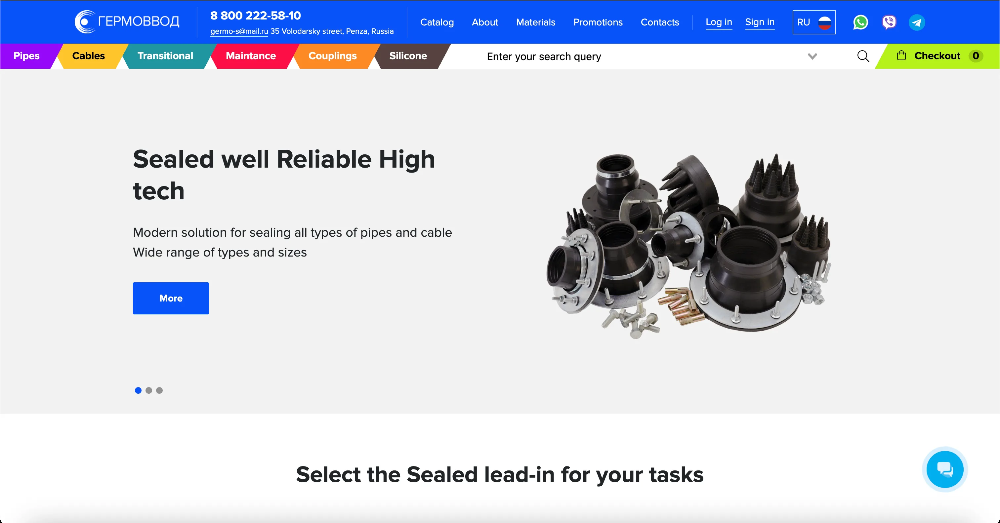

№ 01 — The work
Four jobs, six years of shipping.
2020 — 2026
open each entry ↓
№ 01
A real-time support widget for business travel
FeaturedSmartway · 2025 — 2026 · Preact + WebSocket
+70%chat render · 1k+ msgs
A real-time support widget for business travel
FeaturedSmartway · 2025 — 2026 · Preact + WebSocket

Owned the frontend for the support-chat widget and ticket-management admin panel embedded in a corporate travel platform. Designed the widget API for third-party embedding, implemented HMAC auth, WebSocket messaging, file uploads, and domain-aware ticket routing across flights, hotels, rail and transfers. Virtualized rendering took chat threads of 1,000+ messages up +70% in render performance.
Private — discuss this work
№ 02
Scaled a corporate travel platform for three years
Tech-leadSmartway · 2021 — 2024 · React + TS migration
10×faster builds · Vite
Scaled a corporate travel platform for three years
Tech-leadSmartway · 2021 — 2024 · React + TS migration

Three years on Smartway's web platform — flights, trains, taxis, transfers, hotels. Led the TypeScript migration of the full codebase, replaced Webpack with Vite for ten-times-faster builds, rebuilt the analytics module, ran internal tech talks, and mentored three frontend developers as tech-lead.
Public — read the case study
№ 03
An EdTech marketplace, zero to live in five months
Solo FESmart Online Institute · 2025 · Next.js + BFF
5moempty repo → live MVP
An EdTech marketplace, zero to live in five months
Solo FESmart Online Institute · 2025 · Next.js + BFF

Owned the full frontend end-to-end — course marketplace, scheduling, instructor admin, secure media viewer, loyalty system. Set up the BFF layer in Next.js, automated legacy-data migration via Playwright scraping, and delivered the platform from empty repository to live MVP.
Private — ask about the MVP
№ 04
Where it started — a solo-built B2B store
Solo-builtGermo-S · 2020 · Nuxt + Express
1devshipped end-to-end
Where it started — a solo-built B2B store
Solo-builtGermo-S · 2020 · Nuxt + Express

Built and shipped end-to-end as the sole developer — pipe fittings, cable glands, the unglamorous backbone of factories. Storefront, search, cart, order management, plus a custom CMS for inventory. From requirements to production deploy, alone.
Solo — request project context№ 02 — Method
How the work gets made.
four standing rules
Rule 01
Performance first.
Profile before optimizing. Measure after. Budgets are kept, not admired.
Rule 02
Architecture that scales.
Feature-Sliced Design, modular boundaries, public APIs between slices.
Rule 03
Types are documentation.
Strict TypeScript everywhere — written with care, not ceremony.
Rule 04
Write the docs.
Especially the ones nobody else wants to write.
№ 03 — A note
From the author.
Penza, RU · RU & EN
I'm Danila — a senior frontend engineer from Penza, Russia, with six years building React, TypeScript and Next.js products. I started with a solo B2B e-commerce platform and moved into larger product teams, where my focus became performance, architecture, migrations, and developer experience.
I tend to be the person who cares about build times, performance budgets and TypeScript adoption. I've migrated Webpack to Vite (ten times faster builds), brought a sluggish shopping cart to instant, rewritten authentication without breaking anyone's session, and led a full TypeScript migration of a non-trivial codebase in a year.
I mentor, host internal tech talks (state vs. cache, SSR vs. ISR, the usual), and use AI tools as instruments, not authors — they speed up exploration, refactoring and documentation. The real work is still product judgment: understanding the flow, reducing complexity, and shipping interfaces people can trust.
I'm open to senior frontend roles, remote or relocation, with teams working on complex React products — performance, architecture, and frontend platform work. Ideally a team that values quality, ownership, and long-term maintainability.